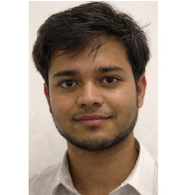

ROBOTICS & AUTONOMOUS SYSTEMS RESEARCHER — RL · PHYSICS-INFORMED ML · UAV/GROUND ROBOT SIMULATION
I build and validate autonomous systems that have to work in the real world — teleoperated inspection robots, UAV flight stacks, and physics-constrained generative models — moving from simulation (ROS2, Gazebo, PyBullet) through to structural validation (FEA) and field testing. Incoming research intern at the Robotics Innovations Lab, IISc Bangalore.

The same three-tier authority-blending law from my teleoperated inspection framework. Drag to blend control between full human authority and full autonomy.
Built a closed-loop RPM control module for a Maglev EDM research platform, improving rotational speed stability by 20%.
Led a 4-member team calibrating and validating Pixhawk/ArduPilot UAV platforms; standardized protocols cut pre-flight setup time by 30%.
Developed MATLAB finite-element models for blast response of jute-fiber composites, reaching 12% agreement with published benchmarks.
RL-based teleoperated navigation for unstructured environments, and a transformable climbing robot for pipeline inspection.
Teleop-conditioned PPO policy with continuous authority blending between human and autonomous control.
Parametric three-arm climbing robot: OpenSCAD design, PyBullet dynamics, FEA structural validation.
PINN embedding the Euler–Bernoulli beam equation to synthesize physically consistent drone-wing damage signatures.